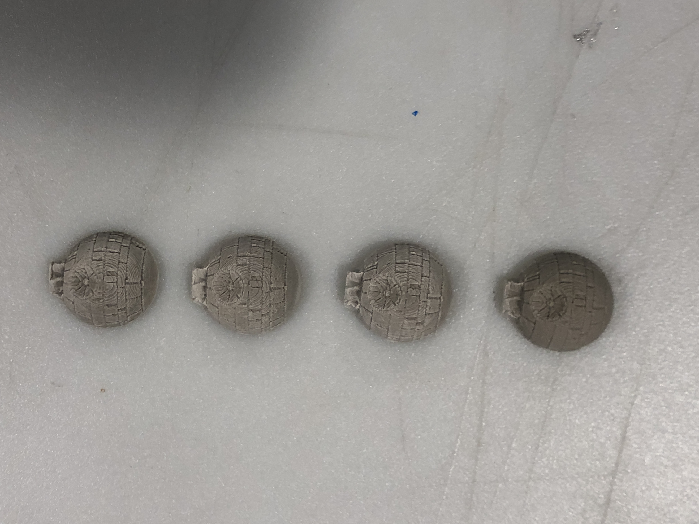
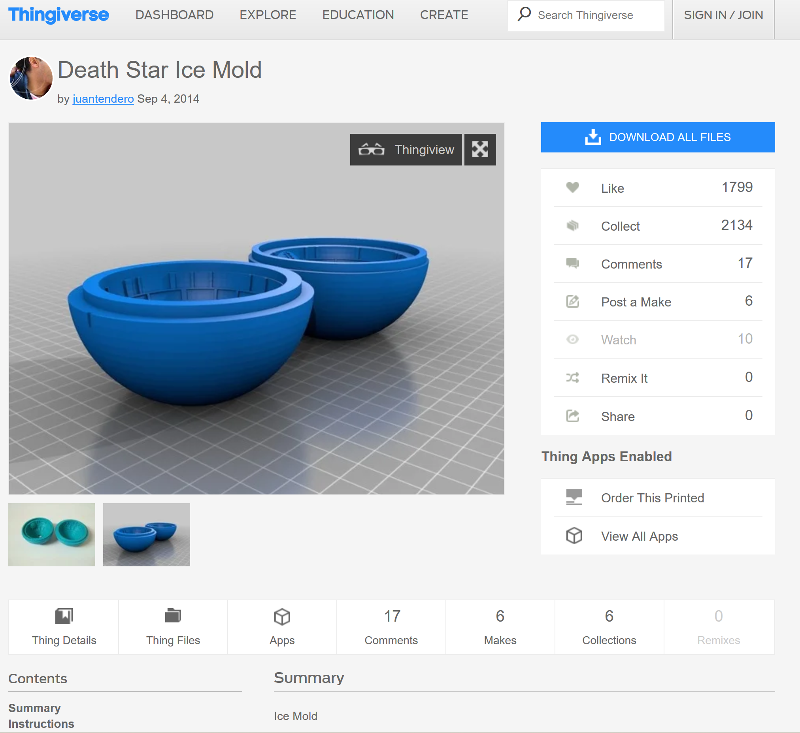
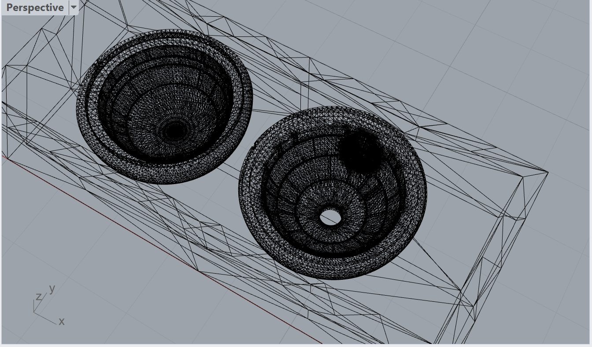
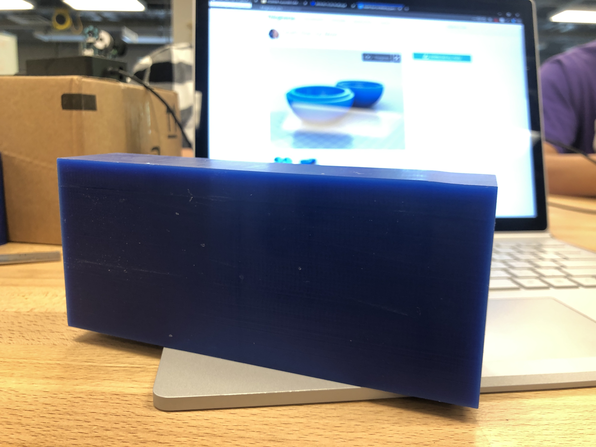
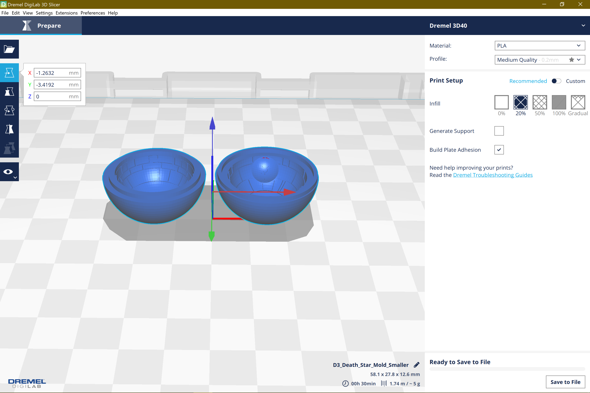
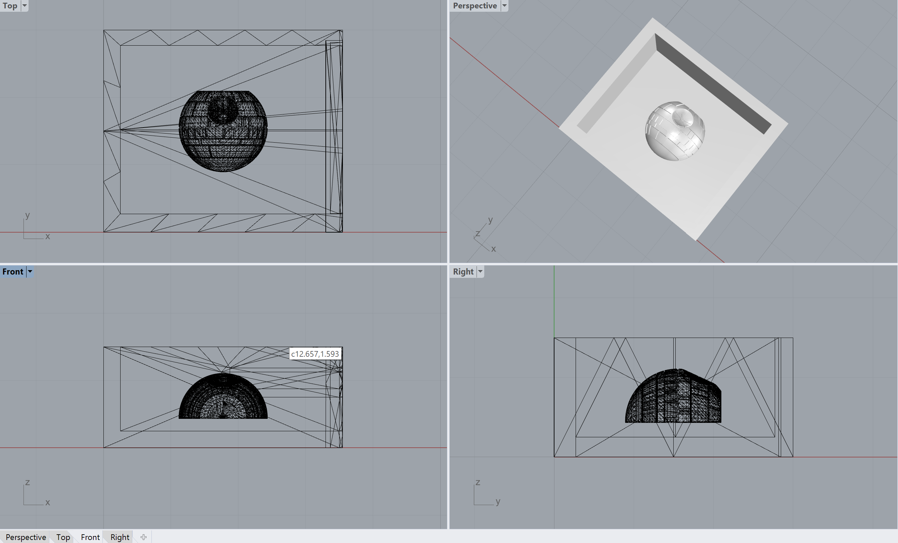
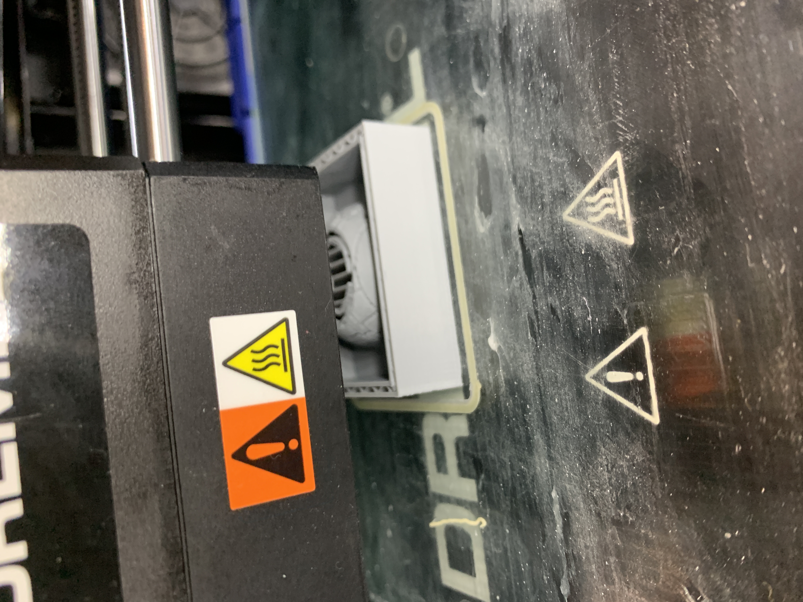
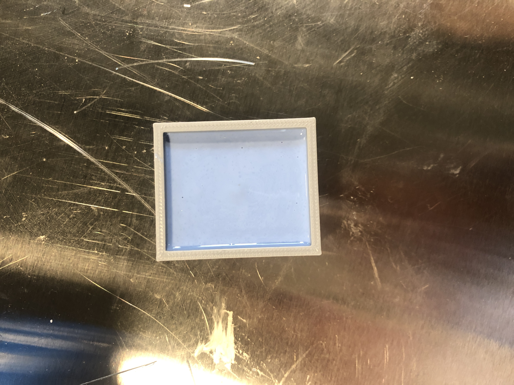
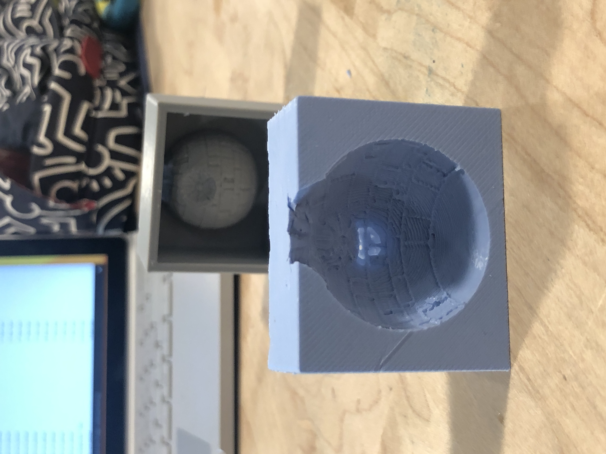
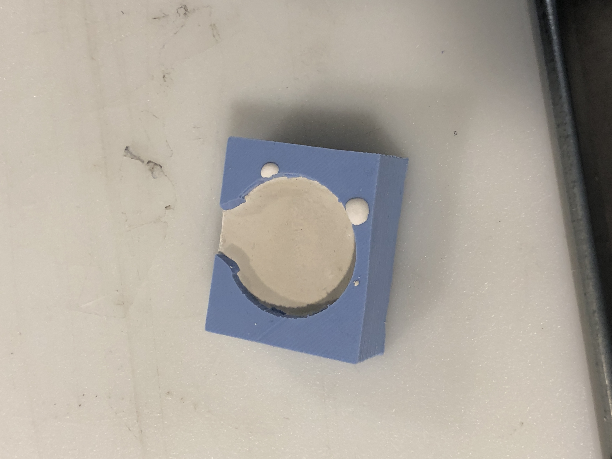

Assignment 6
Death Star Ice Cubes. They're amazing and as a massive Star Wars nerd, molding the Death Star was something I knew I wanted to do immediately. Not to actually use as ice cubes, but I was familiar with the idea of using cool stuff (and silicone) to mold things. Not only would it be a fun experience, but I figured I might actually make something cool.
Off to Thingiverse I go!
Almost immediately I found my enthuasism for crafting Imperial Bases with incredibly stupid design flaws was matched with the online community, and I found several designs to choose from.

After downloading this mold, I felt in pretty good shape, as I was able to manipulate the .stl as needed (scaling), and prepare it for milling.

I then encountered a series of errors in Fusion that would not allow me to properly map and complete my toopaths.
shocker.

I figured I wouldn't worry about it too much, and would get help milling from office hours on Sunday. Due to time contraints, I wasn't able to get my piece milled, but the time was very helpful for me regardless. I redesigned my pieces and was ready to 3D print.

I realized I was misunderstanding the assignment, and that I would need to create a mold before casting it. Thus, my designs would work for the first mold that I make, but any subsequent casts would not capture the design.
It was here where I realized:
1. I needed to 3D print to save time and effort, and also to see if I could get more comfortable with the technique, and
2. Peter saved my life by helping me redesign my molds

I 3D printed the above STL and it turned out great! From here on, it was simple as following form and allowing enough time to complete the molds.

I followed the instructions and mixed the silicone and filled my 3D print mold.

After setting pretty much overnight, we were ready to go with a pretty decent mold!

Big shoutout to Lukas for providing a ton of the plaster / cement stuff to mold from! This part was super simple in comparison t the rest of the assignment, and made me almost feel like a grade school kid experimenting.

Rinse and repeat four more times and I end up with my nearly perfect fleet of fully operational battlestations that will decimate the rebel fleet! (There are no stupid design flaws in mine, at least not intentionally!)
Reflection
This project taught me time management. With the OOMOO taking 6 hours to cure, and a holiday weekend (that I wanted to enjoy), I wanted to make sure I was able to complete this project as soon as possible, especially considering I was not making JUST one thing. While I orginally planned on milling (and subsequently bought the machinable wax), I realized that for a variety of reasons it would not be the best course for me to take, so I relied on the handy dandy 3D printing.
Shout Outs:
Shout outs to: Peter C. for helping me figure out I was designing backwards and giving me advice for fixing my STL, to Kira for sharing her OOMOO, and to Lukas for sharing his plaster with the class!
Source Files:
Thingiverse Link
STL File